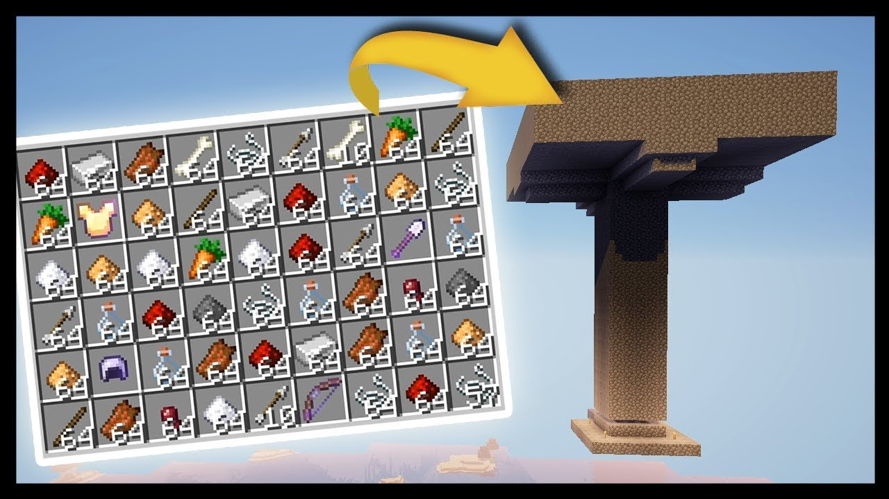
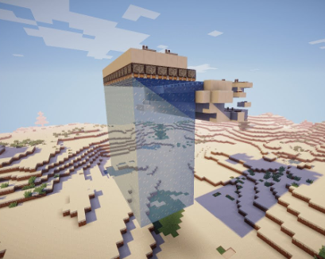
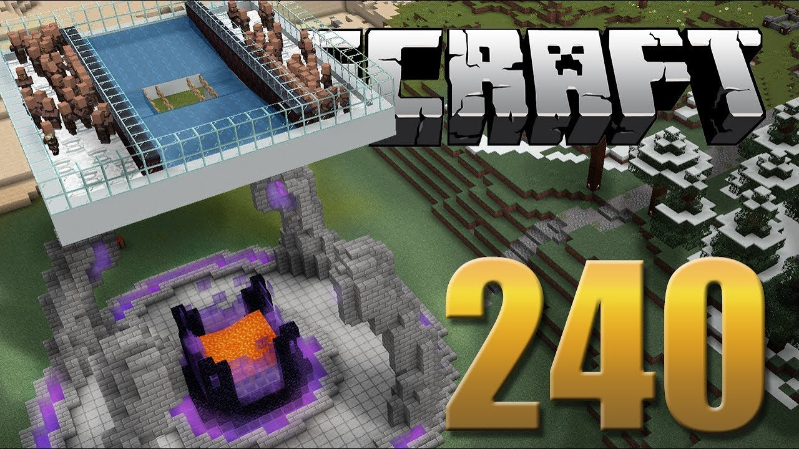
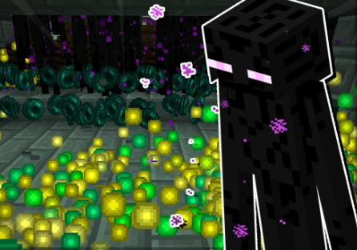

Contato
Entre em contato para tirar mais dúvidas
A Mob Trap serve para obter itens de Mobs e ganhar XP.
A Mob Trap deve ser contruida em um local alto para ter uma boa eficiência assim o spawn de Mobs se concentra somente na estrutura
pode ser contruida com quase qualquer tipo de bloco e tambem pode ter varios andares e além disso há alguns tipos que barram o nascimento
de alguns tipos de Mobs fazendo alguns alterações nela como por exemplo diminuir a altura do teto impedindo nascimento de Esqueletos, colocando
Carpete impedindo nascimento de Aranhas.
A Farm de Gelo serve para produzir Gelo mais rápidamente.
A farm de gelo eu não sei como funciona so coloquei pra render na minha página e também estou sem conteúdo para escrever aqui então se você quer perder
tempo lendo isso continue lendo isso kkkk.
A Farm de Ferro serve pra coletar Ferro sem ter que minerar.
A Farm de Ferro é muito boa porque dá Ferro você vai precisar de vilagis de Camas de Mesas de Trabalho talvez e fazer umas paradas pra fazer com
que o Golem de lava caia na lava e morra quer dizer golem de lava n existe... você entendeu ai poem o negocio de lava na altura da cabeça deles que eles morre
sem queimar os itens na lava tudo que você vai precisar depois é so ficar porque perto pra que os vilagis façam spalnar os Golens na FARM.
Muito importante fazer essa desgraça bem alto também para que os Golens não spalnarem no chão fora da Farm...blz
A Farm de Enderman serve pra não so pegar muitas pérolas de Endermans mas também para ganhar muita XP.
Essa Farm precisa ser feita no The Ende so precisa fazer a mesma coisa da Mob Trap so que no The And é bem facil so tentar spanalnar um andermait que é bem facil so precisa jogar perolas que nem um condenado que tem a possibilidade de spanlnar um lá ai depois você renomea oinfiliz com NameTag pra ele nâo sumir e poem o mizeravel em um carrinho, é o Andermait que vai atrair o Anderman pro cheiro do queijo, já que o jogo não tem física você poem o Andermait flutuando em cima de um buraco ai os Andermans vão cair na armadinha ai você consegue matar eles bem facim.
Entre em contato para tirar mais dúvidas